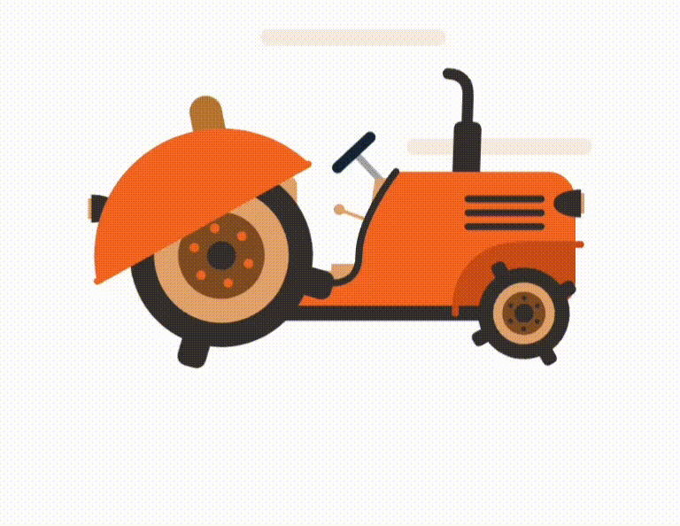

Features

Crop
Recommendation about the type of crops to be cultivated which is best suited for the respective conditions.

Fertilizer
Recommendation about the type of fertilizer best suited for the particular soil and the recommended crop.
Blog
Diving Deep into Agriculture: Uncover insights on sustainable practices and the future of farming in our informative blog.